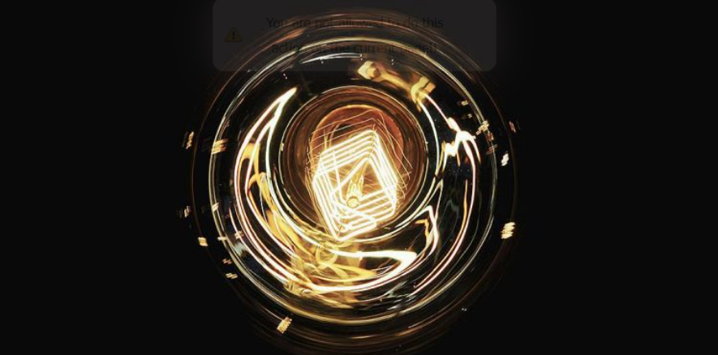
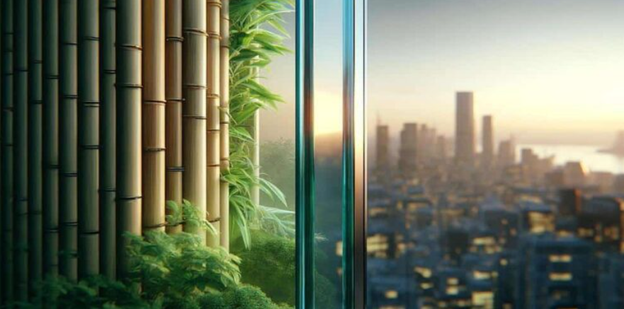
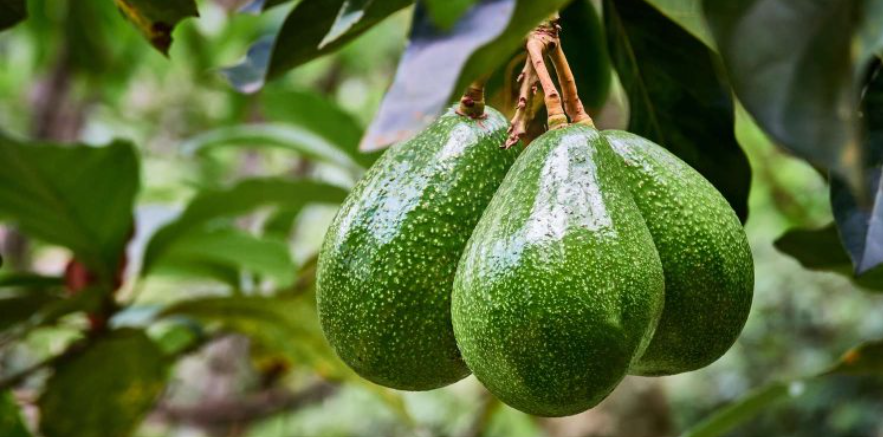
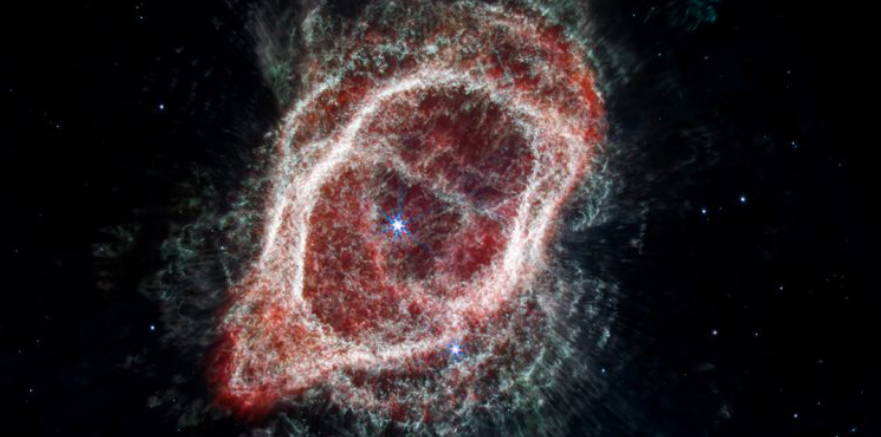
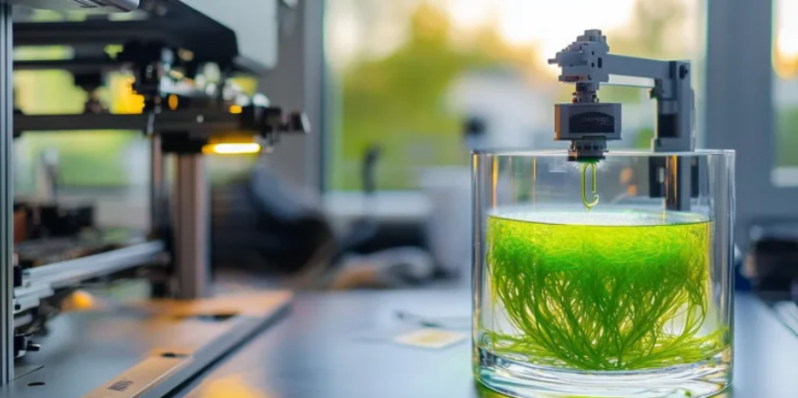

ARTICLES
A collection of STEM news articles and technical news covered, written,
edited and published during my time as a News Writer & Editor at SCIENCE BEE.
These pieces highlight
complex scientific concepts and tech developments
simplified for a broader audience.

Caffeine in Fuel & Electric Cells: Enhancing Energy Efficiency
An exploration of modern material science: using caffeine to enhance the performance of fuel cells. This article breaks down how caffeine’s molecular structure interacts with solar panel materials to improve thermal stability, enhance electron flow, and significantly boost overall energy conversion efficiency, paving the way for more durable renewable energy solutions.
READ FULL ARTICLE IN BANGLA
Transparent Bamboo: The Future of Sustainable Building Materials
An insightful piece covering a breakthrough in sustainable material science: converting fast-growing bamboo into strong, fully transparent wood. The article explains the chemical process of stripping lignin from bamboo fibers, creating an eco-friendly, shatterproof alternative to traditional glass with high light transmittance and superior thermal insulation.
READ FULL ARTICLE IN BANGLA
Eco-Friendly Food Packaging: Utilizing Avocado Plant Byproducts
An examination of green technology focused on transforming avocado agricultural biomass into bioplastics and sustainable food packaging. This insightful article exploring sustainable packaging innovations derived from avocado plant fibers and seed waste. The piece details how biodegradable materials made from avocado agricultural waste offer a durable, non-toxic, and eco-friendly alternative to single-use plastics in the food industry.
READ FULL ARTICLE IN BANGLA
Anatomy of a Cosmic Giant: Inside the Southern Ring Nebula
A deep dive into the astrophysics of NGC 3132, famously captured in extraordinary detail by the James Webb Space Telescope. This piece explores the dying star “Southern Ring Nebula” at its core, the expanding shells of gas and dust. The article examines the intricate dynamic between its central binary star system and the surrounding glowing gas rings, translating complex deep-space imagery into accessible scientific knowledge.
READ FULL ARTICLE IN BANGLAThe Physics of Glueball: Particle Physics and Energy Storage Potential
A detailed breakdown of a breakthrough in particle physics regarding glueballs—composite particles composed entirely of gluons without valence quarks. The article explores how the unique binding force of quantum chromodynamics (QCD) allows these gluon bound-states to exist and examines their theoretical potential for extreme energy density and advanced energy storage applications.
READ FULL ARTICLE IN BANGLA
The Evolution of 3D Printing in Modern Science and Engineering
An in-depth technical analysis exploring the rapid evolution of 3D printing and additive manufacturing. This article examines how layer-by-layer digital fabrication is replacing traditional subtractive manufacturing, enabling complex geometric designs, reducing material waste, and driving breakthroughs in bio-printing, customized prosthetics, and high-precision industrial components.
READ FULL ARTICLE IN BANGLA